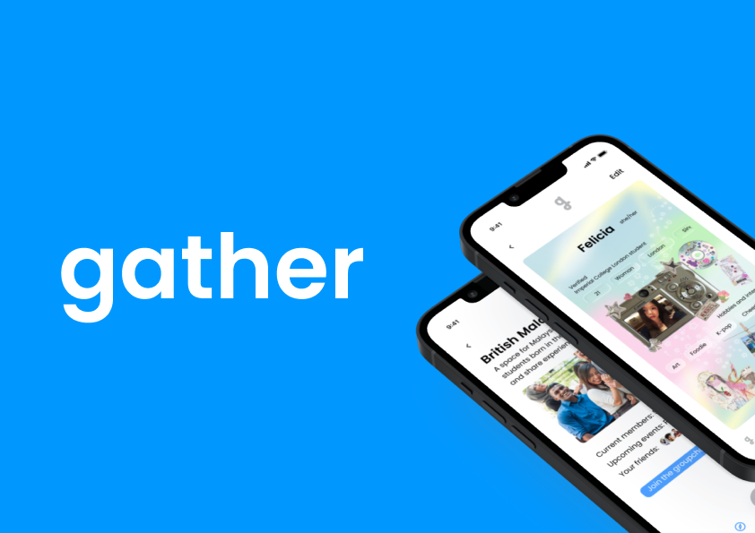

Gather
Social Platform
Overview
Gather was developed for the User Interfaces and Interactions module of the MEng Design Engineering course at the Dyson School of Design Engineering, Imperial College London. The module focuses on human-computer interaction, covering interface design, user journey mapping and prototyping, and asks students to combine user research, iterative prototyping and usability testing in a real project.
Gather is a context-aware social platform that helps students and young adults build real-world friendships effortlessly. Unlike traditional social networks, it focuses on meaningful, timely and location-relevant connections, turning everyday moments into chances to meet new people.

Problem
Research identified several barriers to forming friendships among students and young adults: 1. Limited opportunities for low-pressure social interaction – traditional platforms rely heavily on messaging or pre-scheduled events, which can feel intimidating. 2. Difficulty discovering nearby peers with shared interests – existing apps often lack real-time or location-based relevance, limiting spontaneous connections. 3. Lack of personalised introductions – users struggle to communicate their interests efficiently, leading to shallow or unproductive connections. 4. Over-reliance on existing networks – many platforms encourage interacting only with known friends, making it harder to meet new people. 5. Literature supports these findings: studies indicate that proximity, shared interests, and timely context significantly improve the likelihood of forming meaningful friendships (e.g., Bakker et al., 2022; McPherson et al., 2001).
Research
To ground the design in real needs, we explored the beekeeper community and industry context through:
🎯 Guiding design question:
How might we effectively monitor and manage hive conditions to ensure colony health, protection, and adaptability to environmental changes?
User Scenarios
Based on research findings, I developed the following user scenarios to guide the design process:


Early Concepts & Low-Fidelity Prototypes
The initial design phase focused on exploring how users could form friendships in a way that reduces social pressure while maintaining a sense of safety and control. Early sketches and low-fidelity wireframes were developed to rapidly test different layout structures, navigation patterns, and interaction models.
User Flow & Structure
The user flow was developed to map out the complete journey a user would take through the app, from first-time onboarding to ongoing interaction with activities and friends. The goal was to clearly understand each decision a user might make depending on their context, such as whether they are new to the app, looking for nearby activities, or seeking one-to-one or group interactions.

Mid-Fidelity + Feedback
The initial design phase focused on exploring how users could form friendships in a way that reduces social pressure while maintaining a sense of safety and control. Early sketches and low-fidelity wireframes were developed to rapidly test different layout structures, navigation patterns, and interaction models.
Final Iterations
The user flow was developed to map out the complete journey a user would take through the app, from first-time onboarding to ongoing interaction with activities and friends. The goal was to clearly understand each decision a user might make depending on their context, such as whether they are new to the app, looking for nearby activities, or seeking one-to-one or group interactions.